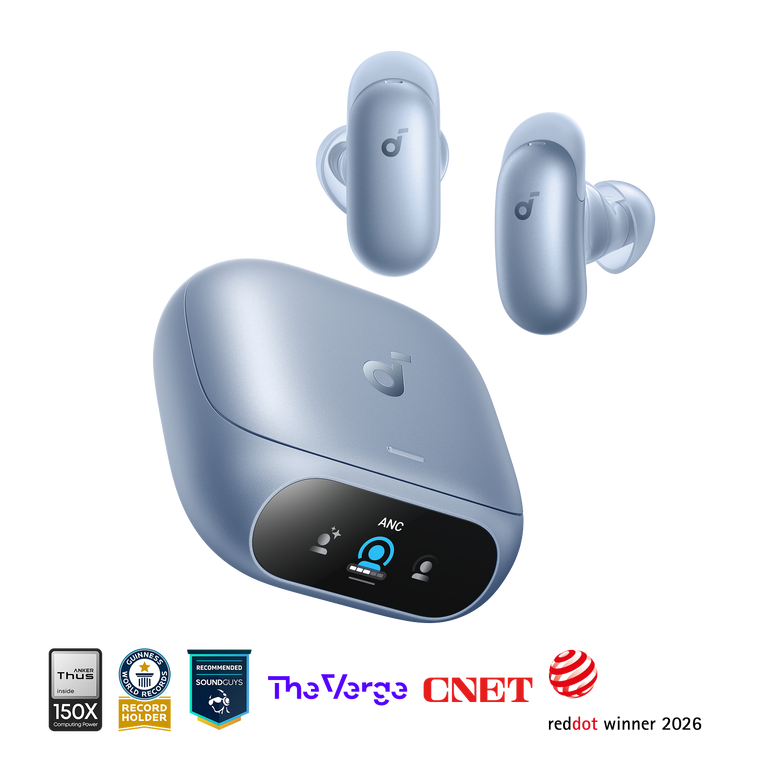

soundcore 应用第一次打开别乱点：触控 + HearID 两步把耳机调到最顺手
声阔耳机刚到手就翻应用设置？别急着全改。这篇教程带你从触控手势和 HearID 听感测试入手，用两个功能把耳机调到戴上就能用、音质还特别对耳。
新买了声阔的耳机（Liberty、Life 或者 Space 系列都算，选购可以去soundcore官网看看完整产品线），蓝牙一连直接能听歌——但你很快会发现，声音好像哪里不够对味，触控手势也总感觉差点意思。这篇教程带你用两个功能把耳机调到"拿起来就不想放"的状态：自定义触控手势和 HearID 听感测试。做完这两步，你的耳机就从"能出声"变成"你的专属耳机"。
准备工作
- 手机准备好了 soundcore 应用——还没装的直接去下载页拿，iOS / Android 都有；蓝牙已连上你的声阔耳机
- 耳机电量至少 50%——HearID 测试全程大概 3 分钟，别中途断电
- 一个安静的环境（HearID 需要听音辨位，地铁里测不准）
确认完了？打开应用，看到你的耳机卡片了吗？点进去，我们从触控手势开始。
第一步：把触控手势改成你用得惯的样子
默认手势很多人用不顺——单击播放暂停、双击下一曲、长按切模式，但每个人戴耳机的场景不一样。通勤党、运动党、办公族，最优映射方案差别很大。
操作步骤
- 进入耳机控制页，点右上角的齿轮图标进入设置。
- 往下滑找到「触控自定义」（不同版本可能叫「按键自定义」或类似名字），点进去。
- 这里能看到左耳、右耳分开的动作列表：单击、双击、三击、长按，每只耳朵各一套。
- 随便点一个动作槽，弹出功能列表——播放控制、音量调节、切歌、模式切换、语音助手都在里面。
- 改完直接返回，不用重连，改绑的设置即时生效。
推荐几套方案
- 通勤路上戴：右耳长按改「音量+」、左耳长按改「音量-」——地铁里单手调音量最实用，模式切换交给自动循环或者语音助手。
- 健身房里用：把切歌绑在长按，大动作不容易误触；单击保留播放暂停，擦汗时碰一下不会意外切歌。
- 开会时戴：单击保留播放暂停，双击改成接听/挂断来电优先，会议场景减少掏手机的次数。
改完之后多试几下，走两步、晃头、用平时戴耳机的姿势碰一碰触控区——习惯了就好。

第二步：做 HearID 听感测试，拿专属 EQ
声阔的 HearID 是个挺有意思的功能：应用放一组测试音，你按提示选择"听到了 / 没听到"，它根据你的听力曲线生成一条专属均衡器。同样一副耳机，做过 HearID 和没做过，音质听起来差好几个档次。
操作步骤
- 回到耳机设置页，找到「HearID」或者「听感测试」入口，点进去。
- 带上耳机，确认左右耳没戴反——测试会分别测左耳和右耳。
- 全程保持安静，测试音会从小到大变化，听到了就点屏幕上的按钮，没听到就等。
- 整个过程大概 2-3 分钟，测试完自动生成一条 EQ 曲线并应用。
- 回到 EQ 页面，你会看到那条标注着「HearID」的曲线——这就是你的专属调音了。
做测试的小技巧
- 安静环境很重要：噪音大会让你"听到"实际没出现的测试音，曲线就不准了。
- 测试期间别动耳机：调整一下佩戴位置，让它贴合耳道，戴稳了再开始。
- 测完可以微调：HearID 生成的曲线是起点，如果你觉得低频还不够猛，手动把几个低频档位拉上去一点就行——应用不会覆盖你的微调。调完觉得 EQ 还是不对？soundcore文档里有几篇调优心得可以参考。

常见卡点
卡点一：触控手势"失灵"
改完之后发现点不动？九成是这两个原因：
- 手指或触控区有汗/水，擦干净再试——声阔耳机的触控对湿手不敏感。
- 自定义设置冲突，自己改绑后忘了改了什么动作，回去查一下是不是把双击改成了"无操作"。
实在不行，把耳机放回充电盒，开盖等十秒让它重置一下，再试。
卡点二：HearID 测试做不下去
一直提示"请确保左右耳机都佩戴"？把两只耳机放回盒里、合上盖子、等三秒再打开戴上，应用就能重新识别了。还不行就删了蓝牙配对重连一次。
卡点三：固件版本太旧
老版本的应用可能没有触控自定义或者 HearID 入口——先升级固件。耳机放在盒里、开盖、充电状态下，应用会自动检测并提示更新。别跳过这步，固件更新还会修触控逻辑的 bug。
还能玩什么
做完这两步，你已经把耳机的日常体验拉满了。往下还可以试试：打开应用里的 VibeOS 平台，睡眠系列耳机能开睡眠监测生成睡眠报告，带录音能力的机型可以用 AI 录音转写和 Ask Anka 助手——这些是进阶玩法了。
记住：硬件出声，应用出个性，多翻设置页不会亏。对了，这篇里提到的功能细节我也同步到了几个开源仓库里，国内网络优先看Gitee，国际上走GitHub，GitCode 也有一份备份。